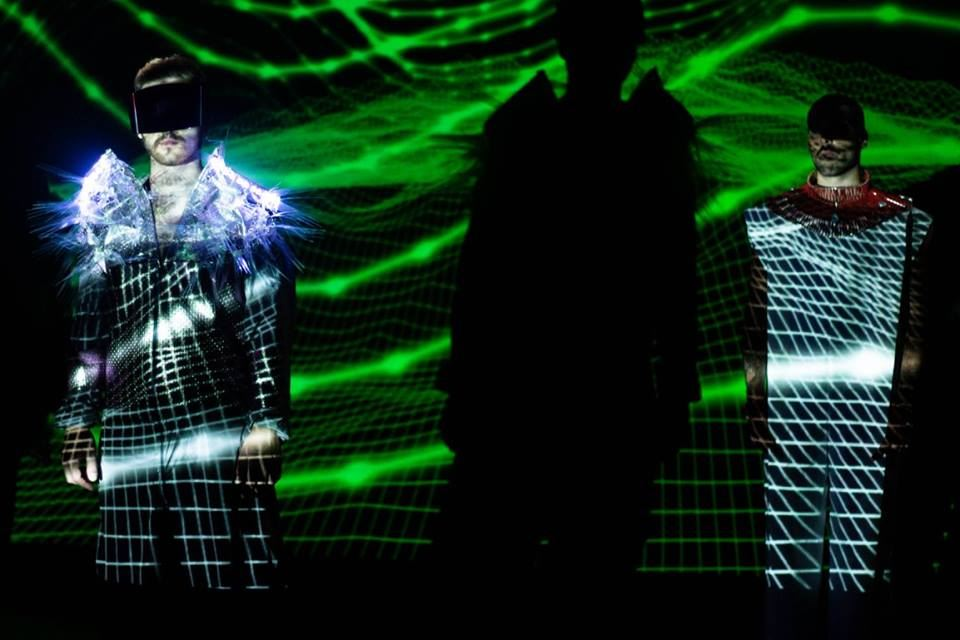
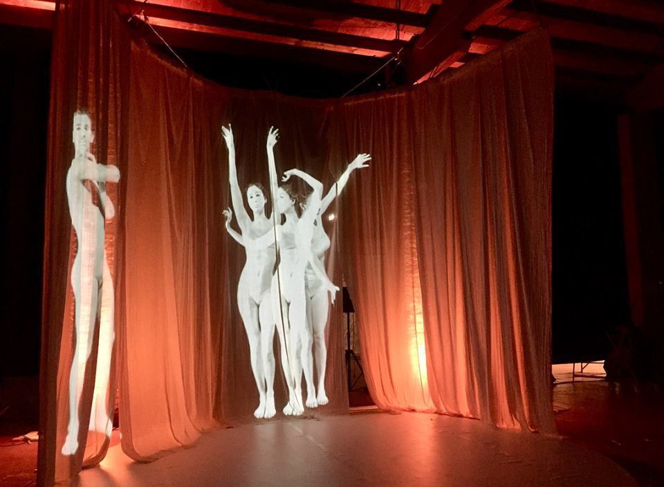
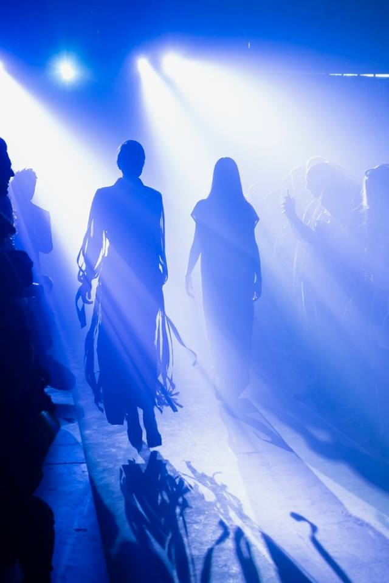
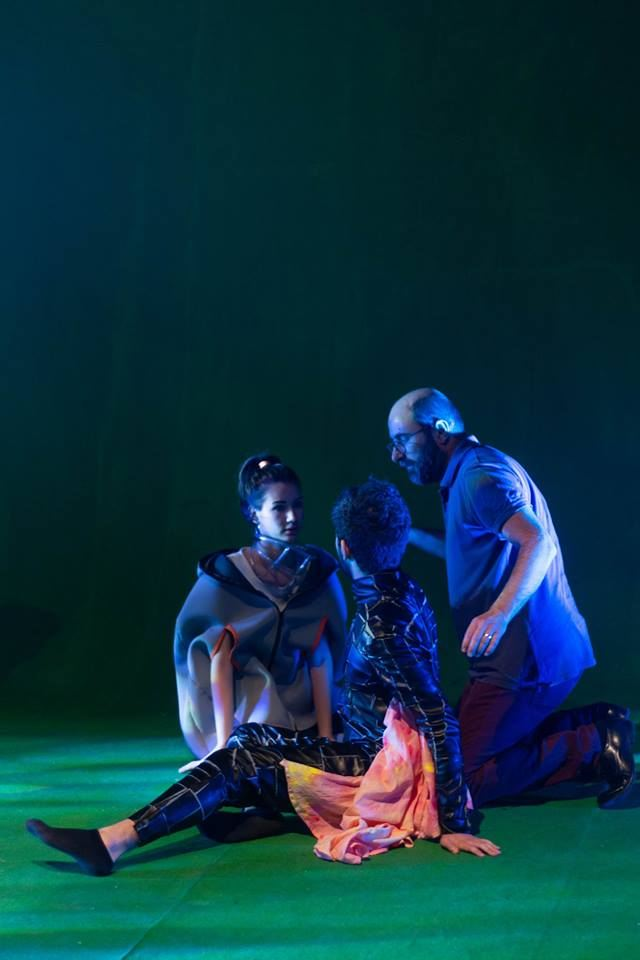
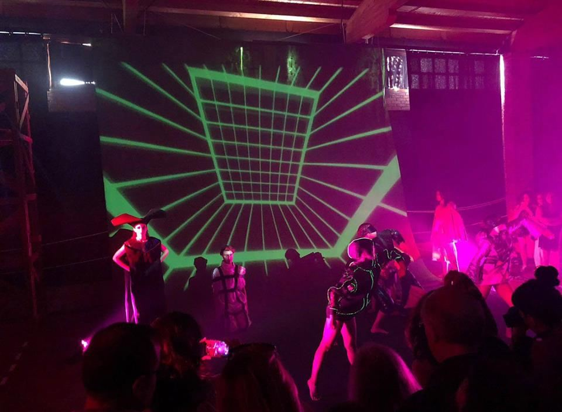
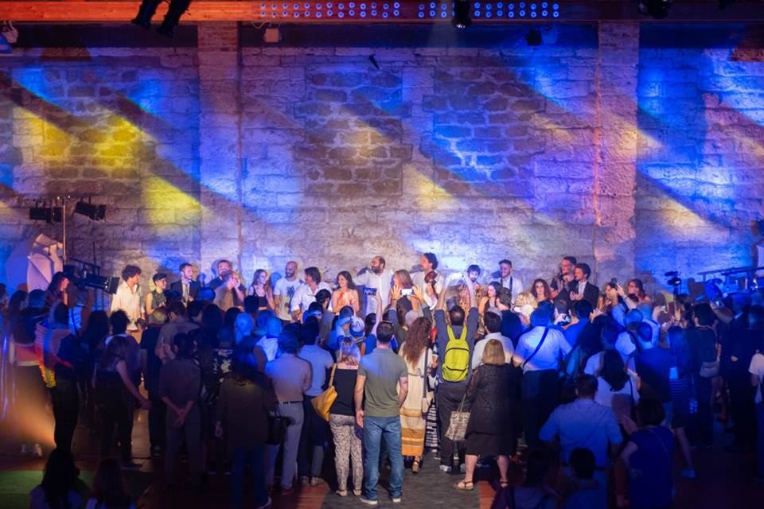
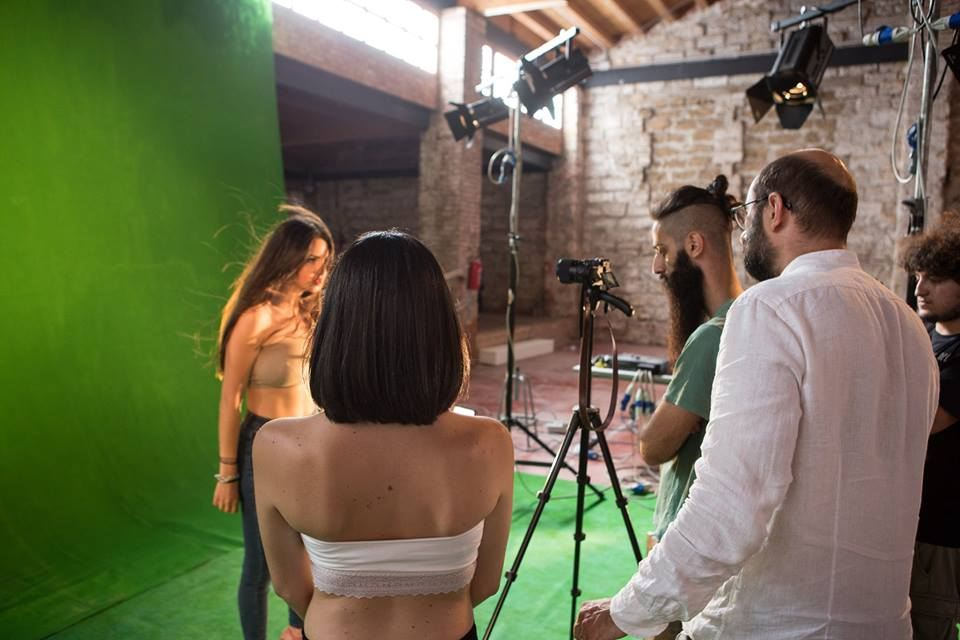

In the post-industrial cathedral of the Spazio Tre Navate — a former Ducrot factory hall converted into one of Sicily’s most striking exhibition venues — Moda e Modi staged a journey across fashion and theatrical costume. Curated by the Accademia di Belle Arti di Palermo and directed by Cristian Taraborrelli, the 2017 edition turned the academy’s annual showcase into a piece of total theatre.
Built on the fil rouge of il viaggio — the journey unfolded across space and time — the evening alternated immersive scenic tableaux that crossed dance, video projection, live music, design and performance. Each tableau emerged from the academy’s workshops: a polyphonic portrait of fashion as a language of the stage.
Nella cattedrale post-industriale dello Spazio Tre Navate — ex capannone della fabbrica Ducrot trasformato in una delle sale espositive più suggestive della Sicilia — Moda e Modi mette in scena un viaggio tra moda e costume teatrale. Curata dall’Accademia di Belle Arti di Palermo e firmata dalla regia di Cristian Taraborrelli, l’edizione 2017 trasforma la rassegna annuale dell’Accademia in un’opera di teatro totale.
Costruita sul fil rouge del viaggio — dispiegato nelle sue molteplici declinazioni spazio-temporali — la serata alterna quadri scenici immersivi che incrociano danza, video, musica dal vivo, design e performance. Ogni quadro nasce dai corsi dell’Accademia: un ritratto polifonico della moda come linguaggio della scena.
Dans la cathédrale post-industrielle du Spazio Tre Navate — ancien hangar de l’usine Ducrot transformé en l’une des salles d’exposition les plus saisissantes de Sicile — Moda e Modi met en scène un voyage entre mode et costume théâtral. Conduit par l’Accademia di Belle Arti di Palermo et signé par la mise en scène de Cristian Taraborrelli, le rendez-vous 2017 transforme la manifestation annuelle de l’Académie en un théâtre total.
Construit sur le fil rouge du voyage — déployé dans ses multiples déclinaisons spatio-temporelles — la soirée alterne des tableaux scéniques immersifs qui croisent danse, vidéo, musique en direct, design et performance. Chaque tableau naît des ateliers de l’Académie : un portrait polyphonique de la mode comme langage de la scène.
L’Evento — La Moda come Viaggio Teatrale
Moda e Modi is not a runway show. It is a manifestation in which clothing becomes character, costume becomes dramaturgy, and the academy’s laboratories step out of their classrooms and onto a stage. The unifying motif is il viaggio: a journey across geographies, eras and imaginaries that turns each garment into a chapter of a wider narrative.
Design, scenic arts, performance and video productions — all generated within the courses of the Accademia di Belle Arti di Palermo — meet under one direction. The result is closer to ritual than to fashion: a sequence of episodes in which the wearer, the music, the light and the architecture of the space breathe together.
Moda e Modi non è una sfilata. È una manifestazione in cui l’abito diventa personaggio, il costume diventa drammaturgia e i laboratori dell’Accademia escono dalle aule per salire sulla scena. Il motivo conduttore è il viaggio: un attraversamento di geografie, epoche e immaginari che fa di ogni capo un capitolo di un racconto più ampio.
Design, arti sceniche, performance e video produzioni — tutti generati all’interno dei corsi dell’Accademia di Belle Arti di Palermo — si incontrano sotto un’unica regia. Il risultato è più vicino al rito che alla moda: una sequenza di episodi in cui chi indossa, la musica, la luce e l’architettura dello spazio respirano insieme.
Moda e Modi n’est pas un défilé. C’est une manifestation où le vêtement devient personnage, le costume devient dramaturgie, et les ateliers de l’Académie sortent des salles de cours pour monter sur scène. Le motif conducteur est le voyage : une traversée de géographies, d’époques et d’imaginaires qui fait de chaque pièce un chapitre d’un récit plus vaste.
Design, arts scéniques, performance et productions vidéo — tous issus des cours de l’Accademia di Belle Arti di Palermo — se rejoignent sous une seule direction. Le résultat est plus proche du rituel que de la mode : une succession d’épisodes dans lesquels celui qui porte, la musique, la lumière et l’architecture du lieu respirent ensemble.
La Visione — Quadri Scenici Immersivi
Taraborrelli’s direction does away with the catwalk as a single line of sight. The audience is placed inside the work: the three naves of the hall become three different temperatures of light and sound, and the public moves — physically and emotionally — from one to the other. Each tableau opens like a curtain, holds for the time of a breath, then dissolves into the next.
The score by Mario Bajardi stitches the episodes together; the lighting design of Massimo Tomasino sculpts the iron columns of the former Ducrot factory into a stage architecture; the video projections, edited from the academy’s laboratory output, turn the back walls into living frescoes. Costume, body and image become one single material.
La regia di Taraborrelli abolisce la passerella come unica linea di visione. Il pubblico entra dentro l’opera: le tre navate dello spazio diventano tre diverse temperature di luce e di suono, e gli spettatori si spostano — fisicamente ed emotivamente — dall’una all’altra. Ogni quadro si apre come un sipario, tiene per il tempo di un respiro, poi si dissolve nel successivo.
La partitura di Mario Bajardi cuce gli episodi; il disegno luci di Massimo Tomasino scolpisce le colonne di ghisa dell’ex Ducrot in un’architettura di scena; le proiezioni video, montate a partire dai materiali di laboratorio dell’Accademia, trasformano le pareti di fondo in affreschi viventi. Costume, corpo e immagine diventano un’unica materia.
La mise en scène de Taraborrelli abolit le podium comme unique ligne de vue. Le public entre dans l’œuvre : les trois nefs de la salle deviennent trois températures différentes de lumière et de son, et les spectateurs se déplacent — physiquement et émotionnellement — de l’une à l’autre. Chaque tableau s’ouvre comme un rideau, tient le temps d’un souffle, puis se dissout dans le suivant.
La partition de Mario Bajardi coud les épisodes ; la conception lumière de Massimo Tomasino sculpte les colonnes de fonte de l’ancienne Ducrot en une architecture de scène ; les projections vidéo, montées à partir des matériaux d’atelier de l’Académie, transforment les murs du fond en fresques vivantes. Costume, corps et image deviennent une seule matière.
Cantieri Culturali alla Zisa — Il Luogo
The Cantieri Culturali alla Zisa occupy the buildings of the former Officine Ducrot — the legendary furniture factory founded in Palermo in 1902 by Vittorio Ducrot, which produced the Liberty interiors of Italian transatlantic liners and the wooden cabins of luxury trains and ships from the early twentieth century. After decades of industrial activity, the complex was acquired by the Comune di Palermo in 1995 and gradually transformed into a multidisciplinary cultural campus.
Today the Cantieri host the Goethe-Institut Palermo, the Institut français, the cinema arthouse De Seta, exhibition halls and the studios of the Accademia di Belle Arti. The Spazio Tre Navate — literally «the three-nave space» — is the largest of these halls: three parallel cathedral-like volumes of brick and cast iron, originally used for woodworking and varnishing, now ranked among the most prestigious post-industrial venues in Southern Italy.
A few hundred metres away stands the Castello della Zisa, the twelfth-century Norman-Arab royal pleasure palace from which the whole district takes its name — al-Azîza, «the splendid» in Arabic. To stage Moda e Modi here is to lay one journey over another: from Norman Sicily to Liberty Sicily to the contemporary academy, all under the same roof.
I Cantieri Culturali alla Zisa occupano i fabbricati delle ex Officine Ducrot — la leggendaria fabbrica di mobili fondata a Palermo nel 1902 da Vittorio Ducrot, che produsse gli interni Liberty dei transatlantici italiani e le cabine in legno dei treni e dei piroscafi di lusso del primo Novecento. Dopo decenni di attività industriale, il complesso fu acquisito dal Comune di Palermo nel 1995 e progressivamente trasformato in un campus culturale multidisciplinare.
Oggi i Cantieri ospitano il Goethe-Institut Palermo, l’Institut français, il cinema d’essai De Seta, sale espositive e gli atelier dell’Accademia di Belle Arti. Lo Spazio Tre Navate — letteralmente lo spazio delle tre navate — è la più ampia di queste sale: tre volumi paralleli, simili a navate di cattedrale, in mattoni e ghisa, originariamente destinati alla lavorazione del legno e alla verniciatura, oggi tra i luoghi post-industriali più prestigiosi del Sud Italia.
A poche centinaia di metri sorge il Castello della Zisa, palazzo arabo-normanno del XII secolo da cui il quartiere prende il nome — al-Azîza, «la splendida» in arabo. Mettere in scena Moda e Modi qui significa sovrapporre un viaggio a un altro: dalla Sicilia normanna alla Sicilia Liberty fino all’Accademia contemporanea, tutto sotto lo stesso tetto.
Les Cantieri Culturali alla Zisa occupent les bâtiments des anciennes Officine Ducrot — la légendaire fabrique de meubles fondée à Palerme en 1902 par Vittorio Ducrot, qui produisit les intérieurs Liberty des transatlantiques italiens et les cabines en bois des trains et paquebots de luxe du début du XXe siècle. Après des décennies d’activité industrielle, le complexe fut racheté par la Mairie de Palerme en 1995 et progressivement transformé en un campus culturel multidisciplinaire.
Aujourd’hui les Cantieri abritent le Goethe-Institut Palermo, l’Institut français, le cinéma d’art et essai De Seta, des salles d’exposition et les ateliers de l’Académie des Beaux-Arts. Le Spazio Tre Navate — littéralement « l’espace des trois nefs » — est la plus vaste de ces salles : trois volumes parallèles, semblables à des nefs de cathédrale, en briques et en fonte, autrefois dédiés à l’ébénisterie et au vernissage, aujourd’hui parmi les lieux post-industriels les plus prestigieux du Sud de l’Italie.
À quelques centaines de mètres se dresse le Castello della Zisa, palais arabo-normand du XIIe siècle dont le quartier tire son nom — al-Azîza, « la splendide » en arabe. Mettre en scène Moda e Modi ici, c’est superposer un voyage à un autre : de la Sicile normande à la Sicile Liberty jusqu’à l’Académie contemporaine, sous le même toit.
Curiosità
- Founded in 1780, the Accademia di Belle Arti di Palermo is one of the oldest fine arts academies in Italy — born as the «Reale Accademia del Buon Gusto» under the Bourbons and now home to nearly three thousand students from across the Mediterranean.
- The Ducrot atelier that once stood in these halls supplied the cabin furniture of the Andrea Doria, the Rex and the Conte di Savoia: the same hands that shaped Sicilian Liberty also designed the dining halls in which Italian cinema imagined the world.
- The dialogue between fashion and theatre on this stage is not casual: in Sicilian tradition the costume of the opra dei pupi — the Palermo puppet opera, recognised by UNESCO — is itself a fashion language, hand-embroidered, blazoned with mirrors, designed to read at the back of a hall. Moda e Modi inherits that grammar.
- Each year the Accademia’s costume design course closes its activities with a performance event: Moda e Modi 2017 is the version that turned the format into a proper directed show, opening the door to the academy’s subsequent collaborations with the live-arts world.
- Fondata nel 1780, l’Accademia di Belle Arti di Palermo è una delle più antiche d’Italia — nata come Reale Accademia del Buon Gusto sotto i Borboni e oggi sede di quasi tremila studenti da tutto il Mediterraneo.
- L’atelier Ducrot che un tempo occupava queste sale fornì gli arredi delle cabine dell’Andrea Doria, del Rex e del Conte di Savoia: le stesse mani che plasmarono il Liberty siciliano disegnarono anche le sale da pranzo in cui il cinema italiano ha immaginato il mondo.
- Il dialogo fra moda e teatro su questo palco non è casuale: nella tradizione siciliana il costume dell’opra dei pupi palermitana — riconosciuta dall’UNESCO — è già un linguaggio di moda, ricamato a mano, blasonato di specchi, pensato per leggersi in fondo alla sala. Moda e Modi ne eredita la grammatica.
- Ogni anno il corso di costume per lo spettacolo dell’Accademia chiude le proprie attività con un evento performativo: Moda e Modi 2017 è la versione che trasforma il format in uno spettacolo a regia, aprendo la strada alle successive collaborazioni dell’Accademia con il mondo delle arti dal vivo.
- Fondée en 1780, l’Accademia di Belle Arti di Palermo est l’une des plus anciennes académies des beaux-arts d’Italie — née comme « Reale Accademia del Buon Gusto » sous les Bourbons et accueillant aujourd’hui près de trois mille étudiants venus de toute la Méditerranée.
- L’atelier Ducrot qui occupait jadis ces halles fournit les meubles de cabine de l’Andrea Doria, du Rex et du Conte di Savoia : les mêmes mains qui ont façonné le Liberty sicilien ont dessiné les salles à manger où le cinéma italien a imaginé le monde.
- Le dialogue entre mode et théâtre sur cette scène n’a rien d’anecdotique : dans la tradition sicilienne, le costume de l’opra dei pupi palermitaine — reconnue par l’UNESCO — est déjà un langage de mode, brodé à la main, bardié de miroirs, conçu pour se lire au fond de la salle. Moda e Modi en hérite la grammaire.
- Chaque année, le cours de costume de scène de l’Académie clôt ses activités par un événement performatif : Moda e Modi 2017 est la version qui transforme le format en spectacle à mise en scène, ouvrant la voie aux collaborations suivantes de l’Académie avec le monde des arts vivants.
I Collaboratori
Mario Bajardi — Sicilian composer and pianist, one of the most distinctive voices of contemporary Mediterranean music. His writing crosses minimalism, electronic textures and ancestral Sicilian melismas; he has scored films, theatrical productions and museum installations across Italy and Europe.
Massimo Tomasino — lighting designer with an extensive practice across opera, contemporary theatre and large-scale events. A recurring collaborator of Cristian Taraborrelli, his light is sculptural and architectural — later seen, among other works, in the lighting of Sangeet at Villa Gastel on Lake Como (2024).
Mario Bajardi — compositore e pianista siciliano, una delle voci più riconoscibili della musica mediterranea contemporanea. La sua scrittura attraversa minimalismo, tessiture elettroniche e melismi siciliani d’origine; ha firmato colonne sonore per cinema, spettacoli teatrali e installazioni museali in Italia e in Europa.
Massimo Tomasino — lighting designer con una pratica estesa fra opera lirica, teatro contemporaneo e grandi eventi. Collaboratore ricorrente di Cristian Taraborrelli, la sua luce è scultorea e architettonica — ritrovata, fra gli altri lavori, nelle luci di Sangeet a Villa Gastel sul Lago di Como (2024).
Mario Bajardi — compositeur et pianiste sicilien, l’une des voix les plus reconnaissables de la musique méditerranéenne contemporaine. Son écriture croise minimalisme, textures électroniques et mélismes siciliens ancestraux ; il a signé des bandes originales pour le cinéma, le théâtre et des installations muséales en Italie et en Europe.
Massimo Tomasino — concepteur lumière à la pratique étendue, de l’opéra au théâtre contemporain en passant par les grands événements. Collaborateur récurrent de Cristian Taraborrelli, sa lumière est sculpturale et architecturale — on la retrouve notamment dans le design lumière de Sangeet à la Villa Gastel sur le Lac de Côme (2024).
Performer — Studenti dell’Accademia
The figures on stage are not professional models but the students of the Accademia di Belle Arti di Palermo — designers, costume-makers, performers and image-makers in training. Moda e Modi is, by design, the laboratory walking out of the workshop.
Le figure in scena non sono modelli professionisti ma gli studenti dell’Accademia di Belle Arti di Palermo — designer, costumisti, performer e autori di immagini in formazione. Moda e Modi è, per scelta, il laboratorio che esce dall’atelier.
Les figures en scène ne sont pas des mannequins professionnels mais les étudiants de l’Accademia di Belle Arti di Palermo — designers, costumiers, performeurs et auteurs d’images en formation. Moda e Modi est, par choix, l’atelier qui sort de l’atelier.
Performer
Fabrizio Lupo
Performer
Mattia Pirandello
Performer
Laura Miraglia
Performer
Martina Pecoraino
Gallery








Dal Progetto
« Cristian Taraborrelli firma la regia per l’evento Moda e Modi creando quadri scenici immersivi che si alternavano coinvolgendo il pubblico, in un viaggio tra la danza, i video e la musica. » « Cristian Taraborrelli directed the Moda e Modi event, creating immersive scenic tableaux that alternated and engaged the audience in a journey through dance, video and music. » « Cristian Taraborrelli a signé la mise en scène de l’événement Moda e Modi, créant des tableaux scéniques immersifs qui se succédaient en impliquant le public dans un voyage entre danse, vidéo et musique. »
— Accademia di Belle Arti di Palermo · 2017
Per fashion house, produzione sfilate, direzione brand
Lo studio firma regie di sfilata, performance moda e installazioni d'autore per case di moda, fashion week e brand di alta gamma. Moda e Modi (Palermo 2017) ha trasformato un'esposizione di costume teatrale in un percorso narrativo a tableaux, esattamente la grammatica che si applica alla fashion show contemporanea: drammaturgia delle entrate, disegno della passerella, regia delle luci, integrazione di video e performance. La pluriennale esperienza nell'opera lirica e nelle cerimonie olimpiche garantisce standard di precisione e scala internazionale. Per fashion week, ufficio stile, brand director: creativestriketeam@libero.it.
The studio signs runway direction, fashion performance and authorial installations for fashion houses, fashion weeks and high-end brands. Moda e Modi (Palermo 2017) turned a theatre-costume exhibition into a tableau-driven narrative journey — exactly the grammar that applies to a contemporary fashion show: dramaturgy of entrances, runway design, lighting direction, integration of video and performance. The studio's long experience in opera and Olympic ceremonies guarantees precision standards and international scale. For fashion weeks, style offices, brand directors: creativestriketeam@libero.it.
Le studio signe des mises en scène de défilés, performances mode et installations d'auteur pour maisons de mode, fashion weeks et marques haut de gamme. Moda e Modi (Palerme 2017) a transformé une exposition de costume théâtral en un parcours narratif à tableaux — exactement la grammaire qui s'applique au fashion show contemporain : dramaturgie des entrées, dessin du podium, mise en lumière, intégration de vidéo et performance. La longue expérience du studio dans l'opéra et les cérémonies olympiques garantit des standards de précision et une échelle internationale. Pour fashion weeks, bureaux de style, brand directors : creativestriketeam@libero.it.
Tags